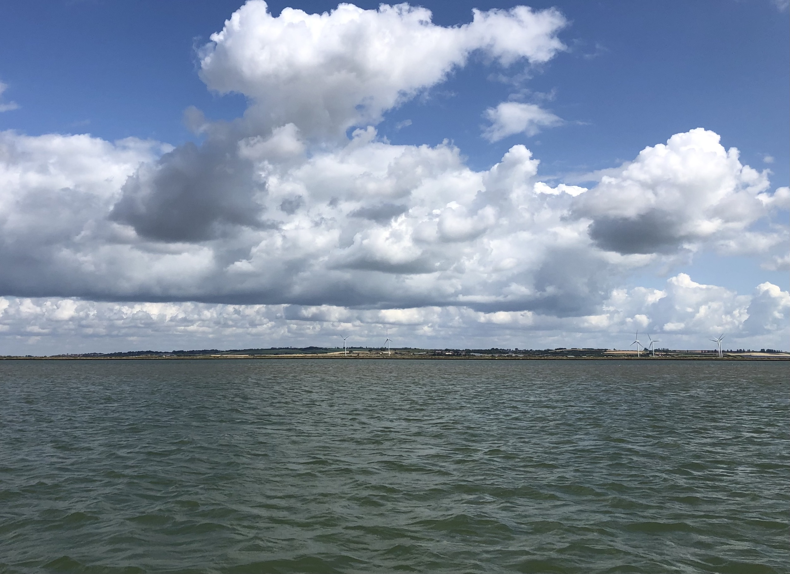
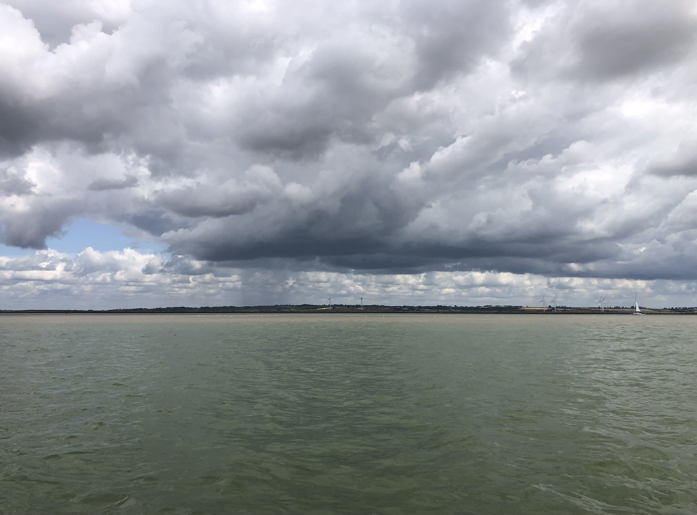

A morning at anchor on the Swale.

I'm watching the critical moment when the outgoing tide suddenly reveals the mudbank of Fowley Island. Birds gather, seemingly walking on water but are really walking on the barely submerged sand to make the most of the morning's catch. Very little boat traffic this morning, a couple of (Dutch) yachts and a police launch heading up tide to the Kings Ferry Bridge. My sheltered anchorage isn't actually that sheltered but at least the nearby banks make for flat water where I am.
Another blustery day is building. The wind comes in bursts with quiet periods in between. I wonder what it would be like to be able to see the wind? The colours of the water in the sunlight range from turquoise green in the foreground to yellower over the sandbank and a paler bluer tone in the middle distance across the Swale.
Over there beyond the water and across the marsh are the Prisons, large and sprawling, perhaps distant ancestors of the nineteenth century prisons and hulks of the Medway. I spent an hour this morning weighing up when to go through the Swale and under the lifting Kings Ferry Bridge - early or late. I opted for the latter to spend some time here just looking. That decision is rewarded with constant change. The mudbank of Fowley Island is now revealed and is surprisingly near. When the tide is up you have no idea the bank is there, it just looks like half a mile of open water, but now the whole Swale takes on a different form and the water is sliced up by coloured strips of water and firmer stuff. A group of swifts just came by, I wonder where they are off to and what urban roost they set out from this morning - I think they fly some distance for food everyday. The sea birds are now busy looking for food on the sand or should I call it mud. Brown and white speckled baby black headed gulls follow their parents around hopefully but the parents seem to ignore them. As the tide drops the dark banks of the sea wall each side of the Swale appear. Without these sea walls the tidal mudflats and marshes must have stretched for miles. Only a couple of hundred years ago this would have been a much wilder place with indistinct river banks and little navigational guidance. But the river would have been busier - a better thoroughfare for freight than the roads. Hard to imagine how long it all took to move heavy cargo on boats using just tide and unpredictable wind.
The mudbank now has a form, a long slightly domed whaleback silvery brown reflecting the sky in a wet surface. There are small runnels appearing. Seen from above these would be a coherent set of veins draining the surface but from this shallow angle they are just variations in the silver surface.
There is a Curlew on the mud bank now and incongruously a crow struts about looking important. I hope to see a seal later. There were easily 30 of them lying about on Horse Sand when I came into the Swale yesterday including several small pups close to thier large mother seals. I always wonder what the seal colony does at high water, do they just swim about pups and all until thier 'home' is revealed by the falling tide? Out of the water the seals are furry with a marked red tone to thier coats. In the water they are smooth and grey, two quite different looks for different daily habitats.
Now I am no longer above the surface of the mud bank. Without moving the landscape, or waterscape I see has changed completely. I am now in a creek in quieter more sheltered water and am beginning to look up at the feeding birds rather than across at them. A Little Egret works it's way along the waters edge. These were rare but now are common - so shapely as to seem unlikely in an English scene. Now that I have been here overnight and understand better the lie of land and water I can see that I could have anchored further up the creek and possibly had a quieter night, but the outlook today would not have been so grand, wide and simple. The mudbank is now a sloping surface the same colour and tone as the sky and I am pleased not to be aground on it as I would be well laid over by the sloping bottom and very uncomfortable. Choosing the right spot to anchor is a dark art, dropping the anchor and letting out, say 20m of chain in this narrow channel places the boat some distance from where I started. In light wind and tide (not like today) the chain would be doing most of the work forming a curving shape on the bed with the boat quite close to the anchor. But despite the strong breeze all is well here, I'm not blown onto the mudbank and there are no other boats to worry about. The chain ocassionally sends a rumbling sound through the boat reminding me that nothing is still.
Five or six Snipes have just appeared feeding together on the bank above me. I've never seen so many. The other birds are mostly invisible to me on the flat sand and mud which is now well above me. It's time to move on.
